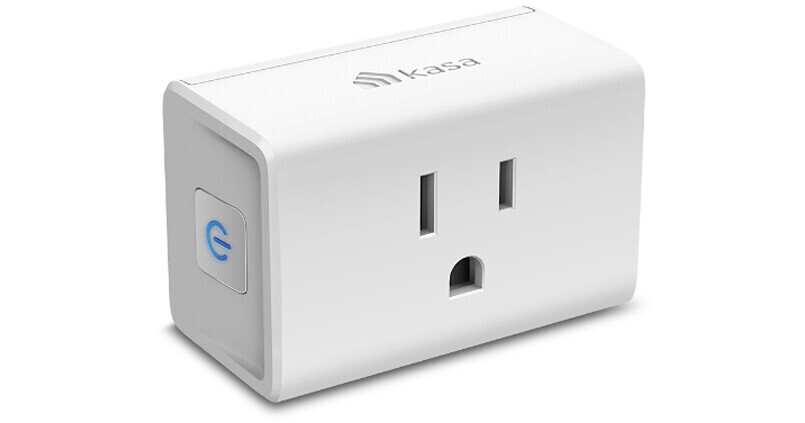

TP-Link Kasa HS103
TP-Link’s mini smart plug — 15 A switching in a package barely larger than the outlet it occupies. Inside: a Realtek RTL8710 running the whole show, and one of the more repairable plug designs in its class.

FCC ID
FCC ID: read it off the label on your unit. Caution: the ID 2AXJ4KP115 is quoted for this plug in some coverage (including the EDN teardown) — that grant actually belongs to TP-Link’s KP115, a different model, so we do not repeat it here as this plug’s ID.
What the FCC filing revealed
The FCC filing for this device includes the documents manufacturers are required to submit: external photos, internal photos, test setup photos, RF test reports, and the user manual. These are public record at fccid.io.
What you can typically find:
- Internal photos — board layout, chip placement, shielding, antenna design
- Block diagrams — sometimes included, showing the RF chain architecture
- Test reports — conducted and radiated emissions data, which can reveal operating frequencies and power levels
- Label placement — where the FCC ID lives on the device
What the FCC filing does not include: schematics (usually withheld under confidentiality requests), firmware, bill of materials, or debug interface documentation.
What we reveal
The FCC tells you what a device emits. We tell you what’s inside and how it works.
- Chip-level identification — every major IC named, with datasheet links where public documentation exists
- Board mapping — what connects to what, which test pads matter, where the debug interfaces hide
- What the manufacturer won’t tell you — undocumented features, hidden radios, silent telemetry, repair blockers
Key Chips
- Realtek RTL8710 — the entire digital subsystem: ARM Cortex-M3 running at up to 83 MHz, 512 KB RAM, 1 MB built-in flash, and 2.4 GHz Wi-Fi with a complete TCP/IP stack — all in one chip.
- Hongfa HF32FV-16 — the mains relay doing the actual switching.
Teardown Notes
- Entry starts at the seam between the main chassis and the rubberized gasket ring — a spudger in the visible gap walks the side plate (with the multi-function button) out of place.
- The digital mini-PCB abuts the relay; the analog and power sections are straightforward, with a notably sizeable fuse on the pass-through ground.
- Two unpopulated eight-lead IC sites on the digital board hint at a more advanced product variant sharing the PCB.
- Two beefy solder points anchor the PCB to the chassis for mechanical stability — the EDN teardown notes they resisted desoldering, suggesting high-temperature solder.
Simple Entry Points
RTL8710 serial and flash
You need: A 3.3 V USB-to-serial adapter (about $3). Mains-voltage warning: this device connects directly to wall power. Do all low-voltage probing with the plug connected only to a bench supply or with mains physically disconnected and verified.
- With mains disconnected, open the case via the gasket seam and locate the digital mini-PCB.
- The RTL8710 exposes UART TX/RX; Realtek’s Ameba SDK documents the serial boot protocol for this family.
- Because the RTL8710 integrates its flash, firmware is read and written through the chip’s own serial bootloader rather than a separate flash chip.
$ # Realtek Ameba-style serial upload (chip-family documented flow)
$ screen /dev/ttyUSB0 38400
# (the RTL8710 console runs at 38400 8N1; the bootloader banner appears on reset)Work on mains-connected devices demands proper isolation and safety practice; if you are unsure, do not open it while it can be plugged in.
The Full Record
Everything in this timeline is documented — a court outcome, a regulator’s action, a published security analysis, or TP-Link’s own statements — and each entry links its source. Where a popular claim about the HS103 is not proven, it is labeled Unverified at the end, with the evidence on both sides.
| Year | What happened | Source |
|---|---|---|
| 2020 | Critical flaw in Kasa plugs, found by consumer testing. Which? (the UK consumer group), working with security consultants NCC Group, tested 10 smart plugs and found a critical flaw in TP-Link’s Kasa plug: weak encryption let an attacker on the same Wi-Fi network seize total control of the plug and of the power going to the connected device, and the plug shared the email address used to set it up unencrypted. Which? did not name the HS103 specifically — this was the Kasa plug line. TP-Link developed a fix that Which? said would roll out in October 2020. | Which? — smart plug investigation, September 2020 |
| 2020 | Firmware removed local control; a rollback was offered by ticket, then stopped. In November 2020 a firmware update for Kasa HS100/HS110 plugs (UK hardware version 4.1) removed the local API — the on-network control path that Home Assistant and other third-party tools used — leaving the Kasa cloud as the only control route. After a week of complaints, TP-Link offered affected users a special firmware to restore local access, requested per device by support ticket and MAC address. By early 2021, users reported TP-Link had stopped offering it. Kasa-line, not HS103-specific — but it is the clearest documented case of this plug family losing a local feature to a firmware push. | Home Assistant community — TP-Link offers way to add local API back, November 2020 |
| 2022 | Kasa cloud outage, November 15, 2022. TP-Link apologized in its own forum for an “unexpected cloud service outage” on November 15 that left Kasa devices offline in the app and broke Alexa and Google control until the service was restored and devices were rebooted. The plugs themselves had not failed — remote control had, because remote control runs through TP-Link’s cloud. | TP-Link community — cloud outage apology |
| 2024 | The company split in two (company-level, not this plug). On May 11, 2024, TP-Link Corporation Group announced it had completed the restructuring begun in early 2022, formally separating from TP-LINK Technologies Co., Ltd. in China across shareholdings, workforce, research and development, production, marketing, and customer service. On October 9, 2024, TP-Link Global and TP-Link USA merged to form TP-Link Systems Inc., headquartered in Irvine, California, as the parent company for the group’s worldwide operations. How complete that separation really is became the central dispute in the U.S. actions below. | TP-Link — restructuring completion, May 2024; TP-Link — TP-Link Systems Inc. headquarters, October 2024 |
| 2024–2025 | U.S. investigations and a proposed router ban (company-level, routers only — not this plug). In December 2024, The Wall Street Journal reported that the Commerce, Defense, and Justice departments had opened separate investigations into TP-Link, that the Commerce Department had subpoenaed the company, and that a ban on U.S. sales of TP-Link routers was possible. In October 2025, The Washington Post reported that the Commerce Department had proposed banning new TP-Link sales, with backing from several other agencies. No ban on Kasa plugs was proposed, and no finding about the HS103 came out of these probes. | Tom’s Guide — TP-Link ban timeline |
| 2025 | An AWS outage took Kasa cloud services down with it, October 20, 2025. When Amazon Web Services failed on October 20, 2025, TP-Link told users that Tapo/Kasa Care subscribers had no video clips stored on its cloud server that day and that other cloud-based services were affected. TP-Link’s same notice states what does not need the cloud: schedules and Away Mode are stored on the plug and continue without an internet connection. | TP-Link community — AWS outage notice, October 20, 2025 |
| 2026 | Texas sued TP-Link Systems (company-level — allegations, not findings). On February 17, 2026, Attorney General Ken Paxton sued TP-Link Systems Inc. in Collin County under the Texas Deceptive Trade Practices Act, alleging the company deceptively marketed its networking devices and allowed the Chinese Communist Party to access American consumers’ devices in their homes. A lawsuit is an allegation until a court rules: TP-Link disputed the claims, and no court had ruled when this page was written. The governor had added TP-Link to Texas’s prohibited-technologies list the month before. | Texas Attorney General — press release, February 17, 2026 |
| 2026 | The FCC blocked new foreign-made routers generally (company-level context, routers only). On March 23, 2026, the FCC added all consumer routers produced in a foreign country — every brand, not TP-Link alone — to its Covered List, after a White House-convened Executive Branch body determined that foreign-produced routers pose unacceptable national-security risks. New foreign-made router models now need a Conditional Approval from the Department of War or the Department of Homeland Security to receive FCC authorization. Routers already authorized may keep being sold, used, and updated — and no Kasa plug was banned. | FCC — Covered List router FAQs |
| 2026 | CVE-2026-76784: the HS103’s local control messages could be forged. TP-Link’s own advisory, published August 26, 2026, lists the HS103P3/HS103P4 by name: insufficient cryptographic protections in the local device communication protocol let an attacker on the same network intercept, replay, or forge control messages, potentially taking unauthorized control of the plug (CVSS v4.0 score 8.7, High). TP-Link released fixed firmware — version 1.1.3 Build 250908 Rel.112508 for the HS103 packs. No confirmed exploitation was reported in the advisory coverage. | TP-Link security advisory — CVE-2026-76784 |
| 2026 | CVE-2026-108473: improper authentication and credential exposure, HS103 V5 named. TP-Link’s advisory of October 14, 2026 lists the HS103 V5 by name: an unauthenticated attacker on the same network could send management instructions to the plug without adequate authentication or authorization, changing its state or management settings, and under certain conditions involving the app and the device-cloud service, account information could also be exposed toward compromise of the associated cloud account (CVSS v4.0 score 8.7, High). The fix for the HS103 V5 is the same firmware build, 1.1.3 Build 250908 Rel.112508. | TP-Link security advisory — CVE-2026-108473 |
The empty part of the record, stated plainly: No CPSC recall or lawsuit naming the HS103 was found in the public record as of November 2026. The plug’s own documented record is the two 2026 protocol vulnerabilities above, the Kasa-line findings of 2020, and its dependence on TP-Link’s cloud for remote control — everything else on this timeline is company-level and is labeled as such.
Did you know
- The HS103’s current rating changed mid-life. TP-Link’s current HS103 (US) 5.0 datasheet rates the plug at 15 A max and 1,800 W resistive — but EDN’s teardown noted that Amazon’s four-pack graphic still listed 12 A max after the specification had moved to 15 A, and its three-pack graphic dropped the current figure entirely. Check the datasheet for your hardware version, not the store graphic. Source: EDN — HS103 teardown.
- Its local protocol was an XOR cipher on port 9999, with no login at all. The original Kasa protocol — the one this plug’s generation speaks — used a static XOR-type obfuscation over TCP port 9999 for discovery and control, with no authentication. That is exactly why the community python-kasa library, and through it Home Assistant, could control the plugs locally without TP-Link’s cloud — and why TP-Link began moving Kasa devices to the authenticated KLAP transport in 2021. Source: python-kasa documentation — protocol design.
- Schedules live on the plug, not in the cloud. TP-Link’s own October 2025 outage notice says schedules and Away Mode are stored on the plug and will continue without an internet connection. It is remote control through the app that dies when the cloud does — not the timer you already set. Source: TP-Link community — AWS outage notice, October 20, 2025.
- TP-Link has already retired early HS103 hardware revisions. TP-Link’s U.S. end-of-sale list marks HS103 hardware versions 1.0, 2.8, 3.0, 3.8, and 5.8 as “contact us for a replacement,” with end-of-sale dates running from 2020 to 2024. The model name stayed on sale while the hardware underneath it kept changing — which is why every advisory above names a hardware version, not just “HS103.” Source: TP-Link — U.S. end-of-sale list (PDF).
Further Reading
“IDE features are language smells.”
— Reg Braithwaite